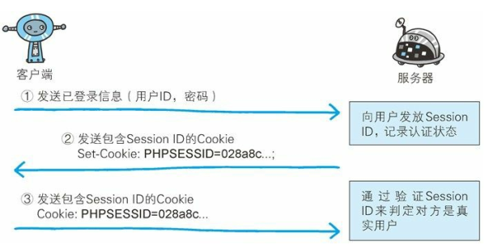

FormBase 认证
2019-01-10 @wsl
基于表单的认证方法并不是在 HTTP 协议中定义的。客户端会向服务器上的 Web 应用程序发送登录信息（Credential），按登录信息的验证结果认证。
根据 Web 应用程序的实际安装，提供的用户界面及认证方式也各不相同。
多数情况下，输入已事先登录的用户 ID（通常是任意字符串或邮件地址）和密码等登录信息后，发送给 Web 应用程序，基于认证结果来决定认证是否成功。
1. 认证多半为基于表单认证
由于使用上的便利性及安全性问题，HTTP 协议标准提供的 BASIC 认证和 DIGEST 认证几乎不怎么使用。另外，SSL客户端认证虽然具有高度的安全等级，但因为导入及维持费用等问题， 还尚未普及。
比如 SSH 和 FTP 协议，服务器与客户端之间的认证是合乎标准规范的，并且满足了最基本的功能需求上的安全使用级别， 因此这些协议的认证可以拿来直接使用。但是对于 Web 网站的认证功能，能够满足其安全使用级别的标准规范并不存在，所以只好使用由 Web 应用程序各自实现基于表单的认证方式。
不具备共同标准规范的表单认证，在每个 Web 网站上都会有各不相同的实现方式。如果是全面考虑过安全性能而实现的表单认证，那么就能够具备高度的安全等级。但在表单认证的实现中存在问题的 Web 网站也是屡见不鲜。
2. Session 管理及 Cookie 应用
基于表单认证的标准规范尚未有定论，一般会使用 Cookie 来管理Session（会话）。
基于表单认证本身是通过服务器端的 Web 应用，将客户端发送过来的用户 ID 和密码与之前登录过的信息做匹配来进行认证的。
但鉴于 HTTP 是无状态协议，之前已认证成功的用户状态无法通过协议层面保存下来。即，无法实现状态管理，因此即使当该用户下一次继续访问，也无法区分他与其他的用户。于是我们会使用 Cookie 来管理 Session，以弥补 HTTP 协议中不存在的状态管理功能。

步骤 1：客户端把用户 ID 和密码等登录信息放入报文的实体部分，通常是以 POST 方法把请求发送给服务器。而这时，会使用 HTTPS通信来进行 HTML表单画面的显示和用户输入数据的发送。
步骤 2：服务器会发放用以识别用户的 Session ID。通过验证从客户端发送过来的登录信息进行身份认证， 然后把用户的认证状态与Session ID 绑定后记录在服务器端。
向客户端返回响应时，会在首部字段 Set-Cookie 内写入 Session ID（如 PHPSESSID=028a8c…）。
然而，如果 Session ID 被第三方盗走，对方就可以伪装成你的身份进行恶意操作了。因此必须防止 Session ID 被盗，或被猜出。为了做到这点， Session ID 应使用难以推测的字符串，且服务器端也需要进行有效期的管理， 保证其安全性。
另外，为减轻跨站脚本攻击（XSS） 造成的损失，建议事先在 Cookie 内加上 httponly 属性。
步骤 3：客户端接收到从服务器端发来的 Session ID 后，会将其作为 Cookie 保存在本地。下次向服务器发送请求时， 浏览器会自动发送 Cookie，所以 Session ID 也随之发送到服务器。服务器端可通过验证接收到的 Session ID 识别用户和其认证状态。
另外，不仅基于表单认证的登录信息及认证过程都无标准化的方法，服务器端应如何保存用户提交的密码等登录信息等也没有标准化。
通常， 一种安全的保存方法是，先利用给密码加盐（salt）的方式增加额外信息，再使用散列（hash）函数计算出散列值后保存。但是我们也经常看到直接保存明文密码的做法，而这样的做法具有导致密码泄露的风险。